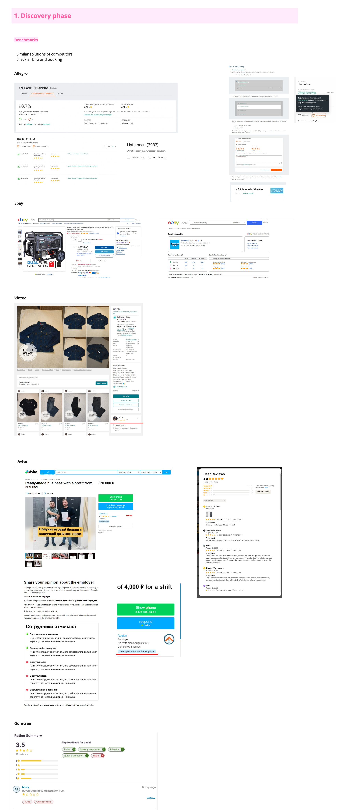
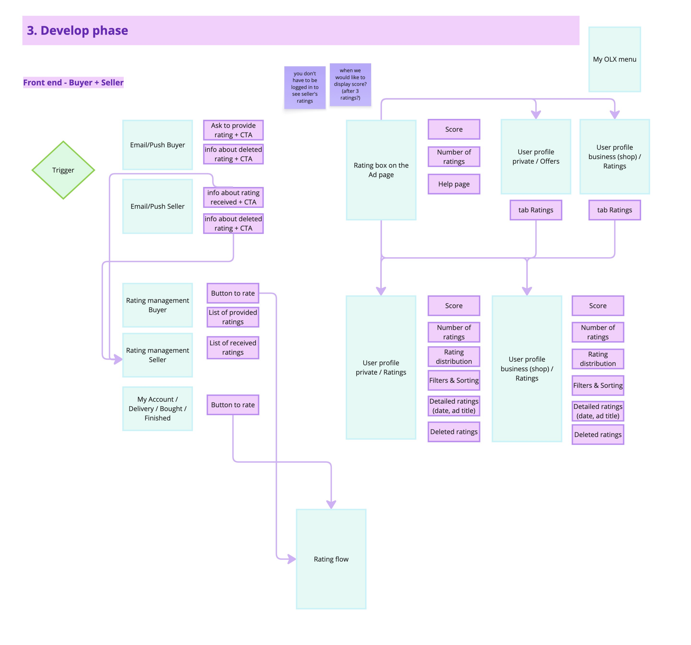
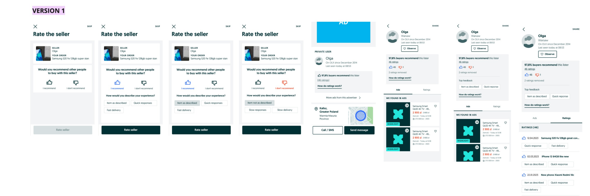
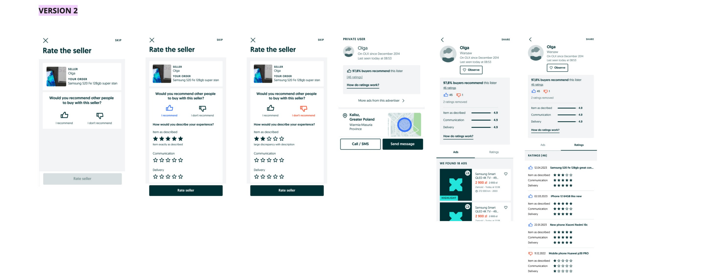
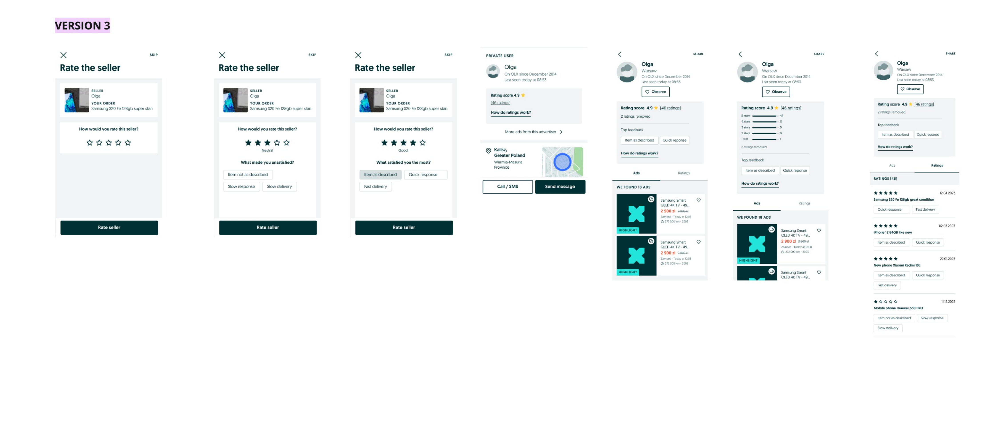
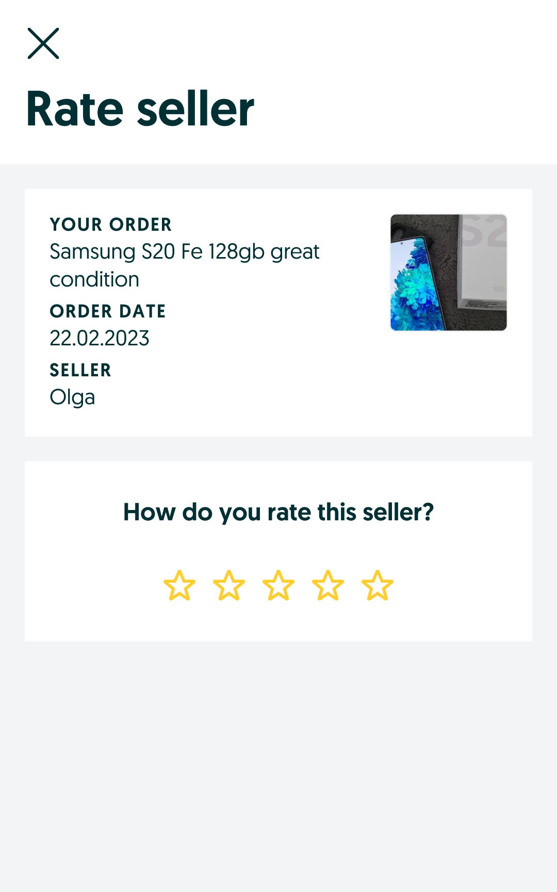
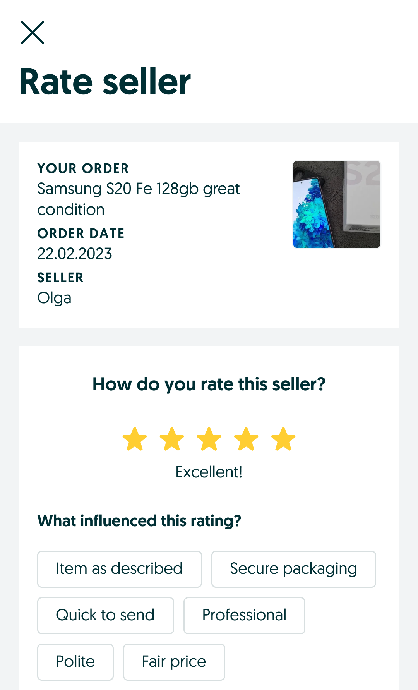
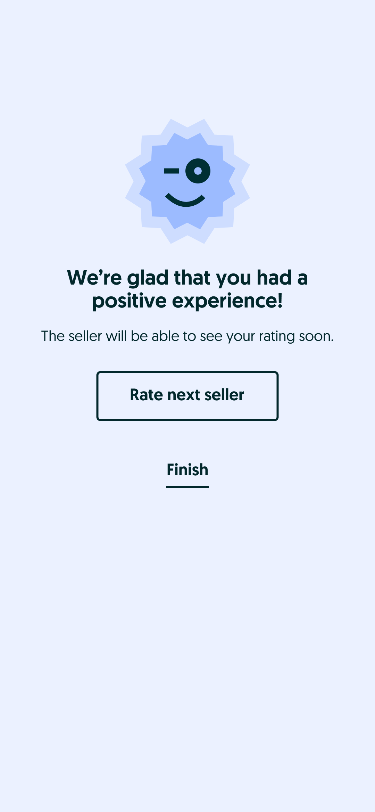
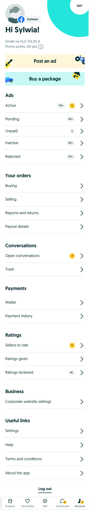

Ratings & Reviews 2.0: rebuilding trust between buyers and sellers on OLX
The old rating system was barely used and hard to trust. We replaced it with a transparent star rating tied to each confirmed transaction, now live in Poland, Romania and Ukraine.
A rating no one could explain was costing OLX the trust it runs on
OLX's peer-to-peer marketplace depends on buyers and sellers trusting each other enough to complete a transaction. The existing ratings system was under-used, easy to game, and gave users little confidence in what a rating actually meant. Ratings & Reviews 2.0 set out to fix the underlying trust problem, not just redesign a star widget.
The problem
Ratings were thin and stale: 60% of buyers who had ever rated had done it only once, and old scores no one could explain still shaped sellers' reputations.
The key decision
We expected a low-effort thumbs up/down to win. Testing showed users trusted stars more, so we changed course and shipped stars with optional tags.
What I did
- TODO: what you owned end to end, e.g. "Designed the buyer rating flow, rating management and profile display"
- TODO: e.g. "Ran the design jam and moderated the usability tests"
- TODO: e.g. "Wrote the acceptance criteria and did design QA"
The result
Live in 3 markets in about 6 months, with 2.29M ratings collected in Poland and Romania by late October 2024.
Old scores and unclear grades were the biggest drivers of mistrust
The project started from feedback gathered internally (legal, marketing, CS teams) and externally (customer reviews) that flagged the current rating and review system as a source of friction and mistrust. We also audited how the current trigger and confirmation screens worked, and reviewed which qualifier scores (Bad / Good / Excellent, mapped to numerical ranges of 1–3 to 7–8+) were actually driving user behavior.
Who we talked to
Users
- Buyers and sellers across the transaction journey
- In-depth interviews with both sides of a rating (1st and 2nd phase)
- Usability testing on the new rating flow
Business & stakeholders
- Deputy Director, Head of Regulation, Legal, Marketing and Customer Support
- Aligning on business expectations and what each stakeholder needed the ratings system to deliver on
The core problems, from both sides
Research surfaced parallel frustrations for buyers and sellers, and mapped what each stage of the flow felt like, plus what the new system needed to fix.
| Pain point | As a buyer | As a seller | Fix in the new system |
|---|---|---|---|
| Understanding what a rating means | Couldn't tell what "good" vs "excellent" actually represented | Same confusion; hard to explain the scoring logic to a buyer | Simplify the rating calculation and make it transparent on both profiles |
| Trust in the number | Didn't trust old/removed ratings still influencing a score | Wanted a fair chance to be re-evaluated, without legacy scores dragging them down | Clear separation of legacy ratings vs. new transactional ratings |
| Ability to act on a bad experience | No easy way to flag or dispute an unfair review | No visibility into why a rating was low, or a route to contest it | Moderation flow with CS review, rejection reasoning, and audit trail |
| Effort to leave feedback | Rating felt like an extra, unrewarded step | Wanted more, higher-quality ratings, not just more friction | A quick flow (one star grade + optional tags), prompted right after a confirmed transaction |
CS agent & moderator perspective
| As a CS agent / moderator | The fix in the new system | |
|---|---|---|
| Reviewing disputes | Manual and time-consuming; no clear moderation flag | Ratings flagged automatically before reaching a moderator's queue |
| Deleting a rating | No standardized process; unclear rules on when a rating should come down | Defined moderation rules, statistics, and a clear rejection-reason workflow |
| Understanding rating history | Hard to see a transaction's full context | Background info shown alongside every rating pending review |
Business scope and quality signals
We defined what a "quality" rating system needs: ratings that come in often enough, a rating request timed sensibly after the transaction, comments that are clear and non-abusive, and edits and disputes handled consistently.
The qualitative findings were then quantified in a large-scale survey. A buyer problem-quantification survey (May–Jun 2023) reached 416K users, with 3,465 completing it. The top-ranked pain point was "I can't decide which transaction I want to rate and when." That pointed straight at a fully transactional model: if every rating belongs to one confirmed transaction and the prompt arrives at the right moment, the buyer no longer has to make that decision.
Competitive benchmarking
To ground the new design in proven patterns, we benchmarked rating and review systems across marketplaces and services with similar trust dynamics: Allegro, eBay, Vinted, Avito, Gumtree, and several booking/rental platforms (including Airbnb-style review flows). This shaped decisions on rating summary displays, distribution breakdowns, filtering, and how competitors handle low ratings and moderation.

We bet on less effort, and planned a careful exit from legacy ratings
Hypotheses
We framed one hypothesis for each side of the transaction:
Seller hypothesis
If we introduce Buyer Rating Management, then sellers' trust in the rating will be higher, because the rating will become an established, stable entry point for providing feedback.
Buyer hypothesis (later disproven)
If we simplify the rating grading (starting from a low-effort binary model as one candidate), then user understanding of the rating will be higher, because the flow requires less effort to complete.
Underlying belief: gathering valuable, quality ratings increases sellers' trust, measured by a change in the share of valid ratings and by higher CX survey scores. Transparency of the rating choice empowers users to make informed decisions and drives higher satisfaction.
Risks considered
- Backlash on removing old ratings: sellers with long, positive histories could see their visible score reset or drop.
- Under-collection: users might not re-rate as many transactions as before if the new flow felt like it required more effort.
An impact analysis of removing old ratings found: 49% of users had no active rating left after removal, and 17% had fewer than 5 ratings. So instead of a hard cutover, we kept legacy ratings visible as separately labelled context and rolled out one market at a time.
Brainstorming & ideation
Using HMW prompts, Crazy 8s and a mini design sprint with MoSCoW prioritization, we explored a wide concept space before converging:
Goal & scope
The goal for the first release: start collecting quality ratings as fast as possible. The strongest trigger (a confirmed transaction) already existed, so we left fine-tuning other prompts for a later phase.
Priority 1: meet legal requirements and make ratings fully transactional. Priority 2: meet user needs across every place ratings appear: the ad page, seller mini-sites, private profiles and MyOLX.
Success metrics
We tracked two groups of metrics:
- Ratings collection: share of eligible buyers who rate, time to rate, and drop-off inside the flow.
- Impact on buying: how many buyers view ratings before purchasing, how ratings relate to purchase decisions and repeat buying, plus overall product health (successful transactions, retention).
Four actors, one system, and three different answers to how much grading people need
With the model defined, I mapped detailed user flows for every actor in the system and moved into wireframing and prototyping.
Core user flows
Buyer rates seller (transactional)
Triggered after a Safe Deal transaction (OLX's protected payment and delivery) or a resolved claim. Eligibility is checked; if eligible, the buyer is prompted to rate via My Account, a push notification, or the Delivery tab. The buyer picks a star grade, optionally adds tags, and submits, landing on a confirmation screen. The rating can later be edited or removed from My Account.
Buyer checks a seller's ratings
From the ad page, a buyer can open the seller's ratings, see the distribution, and filter or sort ratings before deciding whether to transact.
Seller receives a rating
The seller is notified by email and sees the rating across My Account, the active ads list, and their public profile. If they disagree with a rating, they can raise a support ticket.
CS moderation
CS reviews a flagged case for moderation, decides whether the rating should be deleted, and if so, provides a rejection reason. Both buyer and seller are notified by email of the outcome, and the rating (and its history) is updated across all surfaces.
Front-end structure
The design covered the full surface area: rating triggers via email/push, a "button to rate" pattern, rating management screens for both buyer and seller, and rating display on the ad page (score, number of ratings, help page) as well as on public and business profiles (score, distribution, filters & sorting, detailed ratings, deleted-ratings history).

Iterating through wireframe versions
I designed three wireframe versions, each a different answer to one question: how much grading do people need to trust a rating? They range from the lightest possible model to the richest.



Stakeholders split, users broke the tie, and stars beat thumbs
Design jams with stakeholders
All three versions went to two groups in parallel: the strategic team responsible for ratings, and the product design team in a design jam (about 10 designers and design leads). The two groups disagreed: the strategy team preferred the simplicity of V1, while designers preferred V3.
| Version | Strategy team feedback | Product Design Team feedback |
|---|---|---|
| V1, Thumbs up/down + tags | Most-liked solution; tags should be optional; concerned about how ratings are represented on the profile; profile IA needs rework; show a summary of tags on the ratings-detail page | Second-most-liked; few comments; keep tags optional and mandatory only for negative ratings; liked the simplicity |
| V2, Thumbs up/down + stars | Second-most-liked; stars could be a good replacement for open-text ratings | Confusing to mix stars with thumbs; hard to describe how it adds value; concern about the amount of grading shown |
| V3, Stars + tags | Too many grades to choose from; added complexity; stars felt more "product" than the rest of the model | Most-liked by designers despite complexity; calculation logic still needs simplifying; profile felt information-overloaded; breakdown score should live in the ratings tab, matching a familiar, well-known rating pattern users adjust to quickly |
Outcome: V2 was dropped, and V1 and V3 went into usability testing so users could break the tie.
Usability testing
Moderated usability tests settled the tie. Users preferred V3 (stars + tags): they found it more accurate, easier to understand and more eye-catching, despite the extra complexity designers had worried about. The sessions also changed the details:
| What we heard | What we changed |
|---|---|
| Some tags felt "rude" or "too infantile," and users couldn't tell whether a tag described the seller, the item or the delivery | Rewrote tags around concrete, observable things (e.g. "Item as described," "Secure packaging," "Quick to send") and kept the set short |
| Too many tags overwhelmed people; too few felt limiting. About 90% wanted to add their own words | A curated tag set, always optional, with open-text comments added in a later iteration |
| People rate at two moments, after delivery and after the transaction (roughly 50/50) | Two entry points: the Delivery tab and push, plus a "Sellers to rate" list in My Account |
| Old ratings shouldn't simply disappear | Legacy ratings stay visible as labelled context but don't count towards the new score |
| Users wanted to change their mind and understand how the system works | Ratings can be edited or removed from My Account, and an info link explains how the score is calculated |
| Most sellers wanted to reply to a rating | Not in the first release; sellers can contest a rating through support, which feeds the moderation flow |
The design then went through one more round after legal review.
The final call: stars over thumbs
The grading model came down to thumbs up/down vs a star scale, both with tags. Based on the test sessions, we chose stars for four reasons:
- Granularity & transparency: stars let buyers express a nuanced opinion and give sellers a clearer view of what drove their score.
- Familiarity & simplicity: the star pattern is instantly recognizable, so users adopted it with little friction despite the added granularity.
- Objective & quantifiable: a numeric scale is easier to interpret and aggregate into a score.
- Impactful & fair: each rating meaningfully moves the score, keeping the signal honest for both sides.
The tags that shipped:
Shipped as stars with optional tags, one market at a time
I handed off the final designs in Figma with acceptance criteria, user-flow checklists, and edge cases prepared for QA and design QA before development.
The shipped screens
The buyer rating flow, played out: select a star grade, add optional tags, one tap to submit.



Rating management for the buyer: rate a seller, review provided ratings, and open a rating's details.


Where ratings surface across the product: the seller box on the ad page, the seller's received ratings, and the MyOLX menu.



Before launch, we ran an internal training session (February 2024) to walk Customer Support and other teams through the new rating model, moderation rules and edge cases, followed by a Q&A log for questions that came up later.
2.29M ratings in five months across Poland and Romania
Ratings & Reviews 2.0 shipped market by market: Poland (3 Jun 2024), Romania (12 Aug 2024), and Ukraine (16 Dec 2024). Rolling out one market at a time let us monitor and adjust before going wider.
Early behavioural data also revealed a useful pattern: 5-star ratings were submitted faster (≈7.6 days from delivery on average) than lower grades (≈9.5–10.4 days). Satisfied buyers seem to rate quickly and near-effortlessly, while a slower rating is a soft signal of a more considered, often more negative, experience. This shaped how we time rating prompts and follow-ups.
TODO: add 1–2 before/after numbers for the success metrics defined earlier, e.g. "share of eligible buyers who rate went from X% to Y%" or "share of valid ratings up X pts". Compare against the legacy baseline: 60% of buyers had given only one valid rating.
Early pushback was about old ratings, so clarity went to the top of the backlog
After launch, we tracked user feedback from app reviews, social media and support tickets alongside the data.
What users told us
Feedback was mixed in the early weeks after launch. Some users pushed back on the new scoring model and the reset of visible history, questioning why prior ratings weren't fully carried over and asking for more transparency on how the new score was calculated. This fed directly into a backlog of trust and clarity improvements (better explanation copy, clearer legacy-rating labeling).
What the data showed
We measured the success metrics defined earlier, ran A/B tests on flow and copy variants, ran HEART surveys, and watched session recordings (Smartlook, Hotjar, UXCam) to see where buyers dropped out of the rating flow.
TODO: one concrete finding, e.g. "An A/B test of the prompt copy raised completion by X%" or "Recordings showed most drop-off at the tag step, so we…"
The hardest part was letting go of our own hypothesis
A trustworthy rating isn't a widget. It needs every actor in the system (buyer, seller, support agent, moderator) and the moderation and transparency mechanics that make a score believable, not just visible.
The biggest lesson for me was about our own assumptions. We started with a reasonable hypothesis that less effort would mean better understanding, and it was wrong. Keeping three genuinely different concepts alive long enough to test them with users, instead of settling the stakeholder disagreement in a meeting, is what exposed the real trade-off between simplicity and perceived accuracy.
Next time, I'd plan the move away from legacy ratings with users earlier. The early pushback after launch was mostly about old ratings and how the new score is calculated, and better explanation upfront would have prevented some of it.